Translations - Plugins - Dynareg
Dynareg plugins not on shop
Could not find the following dynareg plugins which can be enabled:
- Documenten - Email adrs per document - Enabled : Documentation : Help documentation WARNING: Disabling the "E-mail address per document" plugin may result in a range of errors.
- Documenten - Toon inactive artikelen in documenten - Enable : "Documenten - Toon inactive artikelen in documenten" Documantation : Help documentation - NOTE - The "Inactive" checkbox on the Stock lookup is standard when processing documents. Tick "Inactive" checkbox on stock lookup to list disabled items when processing documents.
- Documenten - Free lookup plugin - Enable : "Documenten - Vrije keuzenlijst" Documantation : Help documentation - Activating the "Free lookup" list will add a "Free lookup" column as a checkbox in documents. The name of the "Free lookup" column can be edited or translated or customised the description of this column and add your own groups in Setup → Groups. NOTE There is no lookup available.
- Documenten - Transitorisch boeken - Enable : "Transitorisch boeken" Documantation : Help documentation. NOTE: Disable / Enable does not seem to work
- Ecommerce - Eerste email check - Shop - Licence : Once-off license - Enable : "Eerste email check"
- Ecommerce - Tweede email aankondiging verwijderen - Shop - Licence : Once-off - Enable : "Tweede email aankondiging verwijderen."
- Gratis kassa plugin - Shop - Licence : Once-off - Enable : "Gratis kassa - On click debiteuren lijst"
Dynareg plugins Enabled by Default
Email address per document
|
|
Email adrs per document plugin - Enabled : "Documenten -Email adrs per document" WARNING: Disabling the "E-mail address per document" plugin may result in a range of errors. Documentation : Help documentation |
Email adrs per document.
Een extra veld voor email adres bij een document.
Translation
Email address per document.
An extra field for email address in a document.
This plugin is by default registered
E-Mail address per account - Active=True
|
|
Disable confirmation message Dropping this will delete all data for this column continue? Should you click Yes to disable this plugin, you may encounter errors. 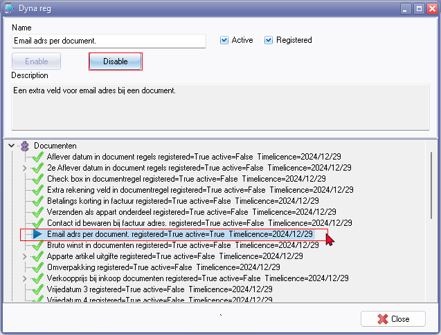 WARNING: Disabling the "E-mail address per document" plugin may result in the following errors: Error Dynamic SQL Error Access violation Access violation at address 656F0082 in module 'rtl290.bpl'. Read of address 00000004. Pointer operation error Invalid pointer operation. If you accidentally disable this plugin and encounter these errors, follow these steps:
|

Dynareg plugins Enabled - Not tested and found
Save contact ID with billing address
|
Save contact ID with billing address - Shop - Licence : One time fee Enabled : "Documenten - Contact id bewaren bij factuur adres" Documentation : Help documentation |
Dynareg Save contact id at billing address
"Contact id bewaren bij factuur adres.
Bewaar de contact id bij een factuur adres zodat per bestelling een contact kan worden gekoppeld die u ook met een rapport kunt ophalen. (anders is deze de standaard bij de debiteur) u dient hiervoor wel de layout aan te passen."
Translation
Save contact ID with billing address.
Save the contact ID with a billing address so that a contact can be linked per order that you can also retrieve with a report, otherwise this is the default for the debtor. You must adjust the layout for this.
Free lookup
|
|
Dynareg Fee lookup plugin Enable : "Documenten - Vrije keuzenlijst" Documentation : Help documentation |
Vrije keuzenlijst
Vrije keuzen lijst in een document
Translation
Free selection list
Free selection list in a document
NOTE : Activating the "Free lookup" list will add a "Free lookup" column as a checkbox in documentsThe name of the "Free lookup" column can be edited or translated or customised the description of this column and add your own groups in Setup → Groups. NOTE There is no lookup available, only a checkbox.
Quantities of multipliers
Aantallen multipliers
Berekend aantallen op basis van het een invoerveld
Translation
Quantities of multipliers
Calculates quantities based on an input field
Outer packaging
Omverpakking verkoop
Gebruik omverpakking in documenten om een dozijn gemakkelijk te kunnen bestelen. De omreken factor kan worden ingesteld bij instellen->Administratie->Voorraad beheer.
Translation
Outer packaging
Use outer packaging in documents to easily order a dozen. The conversion factor can be set at Setup->Administration->Inventory management.
Secondary packaging or outer packaging. It serves as an additional layer of packaging that surrounds the primary sales packaging. Unlike primary packaging, which directly holds the product, secondary packaging is not essential for reasons of hygiene, preservation, or protection against damage or soiling. Instead, it provides an extra layer of containment around the primary packaging for delivery to the end consumer.
Documenten links
Document koppelingen
Document koppeling
Translation
Document links
Shows inactive items in a document
Toont inactive artikelen in een document
Toon inactive artikelen in documenten
Translation
Shows inactive items in a document
Shows inactive items in a document
Confirmation messages
Confirmation messages Enable item (plugin).
"Add new item?"
Another confirmation message.
"Script executed!"
Deregister a plugin confirmation message
Dropping this will delete all data for this column continue?
Tables not found
tblDocHeader: Field 'WSHIPSTOCKID' not found
Document entry grid
* Click here to show/hide/move columns (Mouse over) second asterisk
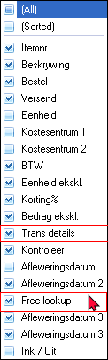
(All)
(Sorted)
Trans details
Free lookup - Activating the Free lookup list in document will add the "Free lookup" in Setup - Groups. You may change translate or customise the description of this column and add your own groups.
Delivery address 3 (last one) should be Delivery address 4 as activated by "Vrijedatum4")
Dynareg - Documents plugins
Free selection list
"Vrije keuzen lijst
Vrije keuzen lijst in een document"
Translation
Free selection list
Free selection list in a document
Activating the Free lookup list in document will add the "Free lookup" in Setup → Groups. You may change translate or customise the description of this column and add your own groups.
Free lookup - Delivery date 2 / Delivery date 3
Could this Free lookup column not be moved before or after Delivery dates.
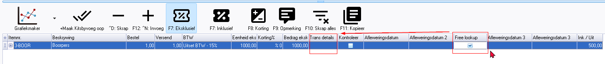
Delivery dates
Delivery date 1/2/3/4 - Documentation : Help documentation -
Delivery date 1
|
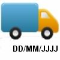 |
Dynareg Delivery date 1 plugin - Shop - Licence : Once-off - Enable : "Documenten - Aflever datum in dokument regels" Documentation : Help documentation - |
"Aflever datum in document regels
Geeft een extra datum veld in document regels waar u een datum kunt invoeren deze kan bewerkt worden ook al heeft u het document verwerkt."
Translation
Delivery date in document lines
Provides an additional date field in document lines where you can enter a date that can be edited even after you have processed the document.
Delivery date 2 - Shop -
|
Dynareg Delivery date 2 plugin - Shop - Licence : Once-off - Enable : "Documenten - 2e Aflever datum in dokument regels" Documentation : Help documentation - |
"2e Aflever datum in document regels
Geeft nog een extra datum veld in document regels waar u een datum kunt invoeren deze kan bewerkt worden ook al heeft u het document verwerkt."
Translation
Second Delivery date in document lines
Provides a second additional date field in document lines where you can enter a date that can be edited even after you have processed the document.
Delivery date 3
|
Dynareg Delivery date 3 plugin - Shop - Licence : Once-off - Enable : "Documenten - Vrijedatum 3" Documentation : Help documentation - |
"Vrijedatum 3
Geeft een extra datum veld in document regels waar u een datum kunt invoeren deze kan bewerkt worden ook al heeft u het document verwerkt."
Translation
Free date 3 -> Third Delivery date in document lines
Provides an additional third date field in document lines where you can enter a date that can be edited even after you have processed the document.
Delivery date 4
|
Dynareg Delivery date 4 plugin - Shop - Licence : Once-off - Enable : "Documenten - Vrijedatum 4" Documentation : Help documentation - |
"Vrijedatum 4 ->
Geeft een extra datum veld in document regels waar u een datum kunt invoeren deze kan bewerkt worden ook al heeft u het document verwerkt.."
"Dynareg Delivery date 4 plugin
In your documents you now have a 4th date field per item line. This allows you to indicate a delivery or collection date on your invoices.
Translation
Free date 3 -> Fourth Delivery date in document lines
Provides an additional fourth date field in document lines where you can enter a date that can be edited even after you have processed the document.
Vrijedatum 4 - Adds Delivery date 3 - should read Delivery date 4
Edit date
Set date
Could possible be changed to => Change date 2352 / 2367
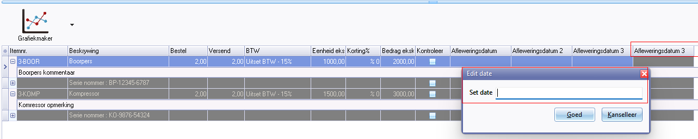
Check box in document line
|
Dynareg Checkbox in document lines plugin - Shop - Licence : Once-off - Enable : "Documenten - Check box in documentregel" Documentation : Help documentation - |
"Check box in documentregel"
"Geeft een checkbox veld in document regels deze kan bewerkt worden ook al heeft u het document verwerkt."
Bug Can only edit the ticks in unposted documents, Posted docyments tick cannot be removed or added.
Translation
Check box in document line
Provides a checkbox field in document lines that can be edited even after you have processed the document.
Gross profit in documents
|
Dynareg Bruto margin in documents plugin - Shop - Licence : Once-off - Enable : "Documenten - Bruto winst in documenten" Documentation : Help documentation |
"Bruto winst in documenten
Toont de totalen costprijs en winst bij verkoop documenten." - Shop -
Translation
Gross profit in documents
Shows the total cost price and profit in sales documents.
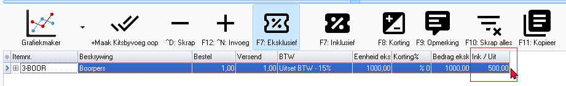
Inc / Exp in English = Ink / Uit in Afrikaans 1188 (This label is in the Chart of Accounts or Reports → Ledger → Listing report
Maybe it could be changed to => Cost price 414 / 3286
Shows only the cost price
No profit is shown needs to be calculated manually.
Numbers based on date and date 2
|
Dynareg Numbers based on date and date 2 plugin - Shop - Licence : Once-off - Enable : "Documenten - Aantalen op basis van datum en datum 2" Documentation : Help documentation - NEED TO UPDATE AND TEST |
Aantalen op basis van datum en datum 2
Berekend aantallen op basis van het datum veld
Shop
Aantallen op basis van datum 1 en 2
Vermenigvuldigd het artikel totaal bedrag op basis van het aantal en de periode tussen datum veld 1 en datumveld 2.
Translation
Numbers based on date and date 2
Calculate quantities based on the date field
Shop
Numbers based on dates 1 and 2
Multiplies the item total amount based on the quantity and period between date field 1 and date field 2.
Documentation : Not tested.
Selling price in purchase documents
|
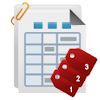 |
Dynareg - Directly Edit Sales Prices in Purchase Documents Plugin - Shop - Licence : Once-off - Enable : "Documenten - Verkoopprijs bij inkoop documenten" Documentation : Help documentation |
"Verkoopprijs bij inkoop documenten"
"Bewerk direct de verkoop prijzen vanuit een in een inkoop document.
Hier kunt u dan de 3 verkoop prijzen uit osfinancials bewerken bij een gekozen artikel."
Translation
Selling price in purchasing documents
Edit sales prices directly from a purchase document.
Here you can edit the 3 sales prices from osfinancials for a selected item.
Screens outstanding translations
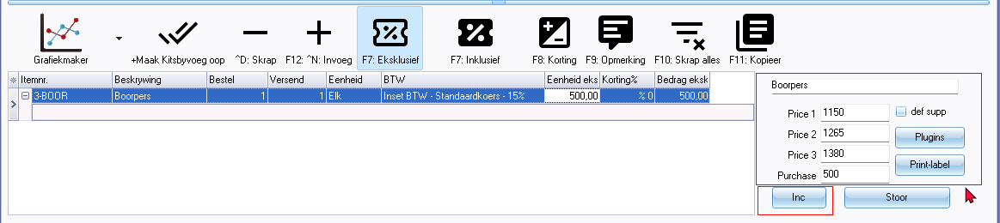
Directly edit the sales prices in a purchase documents plugin
Here you can edit the 3 sales prices within a purchase document (purchase, supplier return and order) for a selected item. The Selling prices will be updated in the Ledger tab of the stock item.
You may edit the prices inclusive or exclusive of Tax VAT/GSTSales tax).
Outstanding label translations
def supp - Default supplier -
Plugins - button -
Print label - button
Inc or Excl button
Selling prices may be user defined selling price 1 / 2 / 3 descriptions (Setup - Stock information)
Price 1
Price 2
Price 3
Purchase (price) cost price
No purchase price
Geen inkoopprijs
Bewerk direct de verkoop prijzen vanuit een in een inkoop document. Hier kunt u dan de 3 verkoop prijzen uit osfinancials bewerken bij een gekozen artikel.
Translation
No purchase price
Edit sales prices directly from a purchasing document. Here you can edit the 3 sales prices from osfinancials for a selected item.
Documentation : Not tested. Could not find on Shop.
Edit order quantities and sales per 30 60 90 days
Bewerken bestel aantallen en verkopen per 30 60 90 dagen
Gebruik deze plugin om het bestel ,Minimum en trigger aantal aan te passen tijdens inkoop. Ook ziet u hoe veel producten er in de afgelopen 30 60 90 dagen zijn verkocht. Alleen de verkopen worden daarbij geteld en niet de credit notas.
Translation
Edit order quantities and sales per 30 60 90 days
Use this plugin to adjust the order, minimum and trigger quantity during purchasing. You can also see how many products have been sold in the past 30, 60, 90 days. Only sales are counted and not credit notes.
Documentation : Not tested. Could not find on Shop.
Payment discount
|
Dynareg Payment discount invoice plugin - Shop - Licence : Once-off - Enable : "Documenten - Betalings korting in factuur" Documentation : Help documentation - |
"Betalings korting in factuur"
"Vul een betalings korting artikel in bij instellen voorraad dan kunt u een percentage opgeven voor de betalings korting."
Translation
Payment discount in documents (Also available in other document types, including invoices)
Enter a payment discount item when setting up stock and you can specify a percentage for the payment discount.
Outstanding translation labels
Payment discount
Payment discount percentage
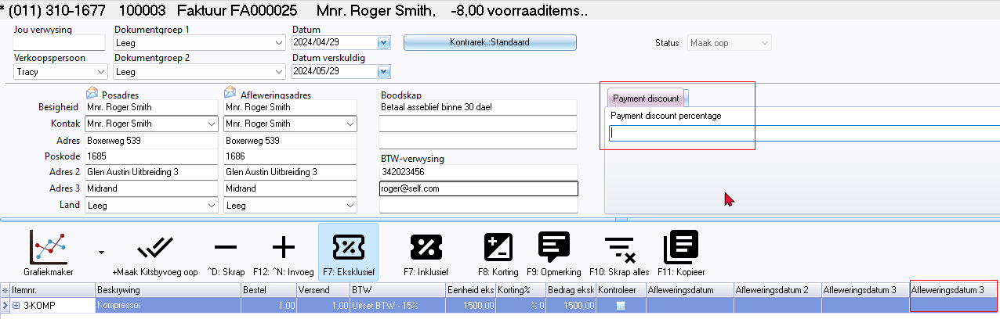
Shipping cost
|
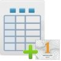 |
Shipping costs separately on invoice plugin - Shop - Licence : Once-off - Enable : "Documenten - Verzenden als apart onderdeel" Documentation : Help documentation - |
"Verzenden als appart onderdeel"
"Verzendkosten als dropdownkeuzen in document bij instellen voorraad kunt u een artikel groote aangeven welke gebruikt wordt vooor de lijst met verzendkosten."
NOTE: Shipping costs separately on invoice plugin - can be used for sales documents such as invoices, credit notes and quotes. This plugin can also be used for purchase documents such as purchase, supplier return and orders.
Translation
Shipped as a separate part
Shipping costs as drop-down choices in document when setting stock, you can indicate an item size which will be used for the shipping costs list
Outstanding translation labels
Shipment
Shipment amt
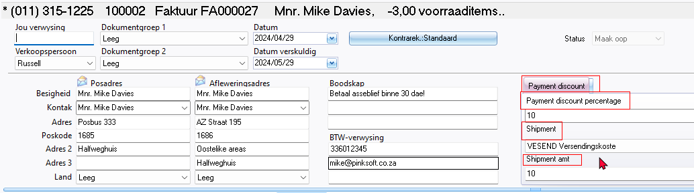
Setup - Stock information
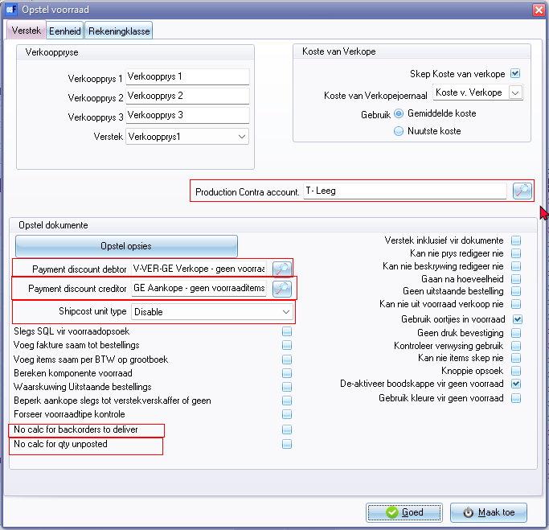
Dyna plugins
- Payment discount debtor - Also lookup Titlebar caption "Select stock"
- Payment discount creditor - Also lookup Titlebar caption "Select stock"
- Ship cost unit price + "Disable" on list
Other older translations outstanding
- Production Contra account - Also lookup Titlebar caption "Select account"
- No calc for backorders to deliver
- No calc for qty unposted
Inactive stock
|
|
Dynareg Show inactive items in documents plugin - Shop - Licence : Once-off - Enable : "Documenten - Toon inactive artikelen in documenten" Documentation : Help documentation |
When processing documents, you're required to choose the stock item within the document lines section. By default, only the active stock items are displayed. If a stock item is marked as inactive (disabled) on the Stock form, it won't appear in the Stock lookup. This ensures that only active or enabled items are available for selection in the documents.
Toon inactive artikelen in documenten
Toont inactive artikelen in een document
Translation
Show inactive items in documents
Shows inactive items in a document
NOTE : The "Inactive" checkbox option to show items in a document is available on the Stock lookup works in any Set of Books without this plugin being enabled or disabled.
Inactive - By default only the active items is listed in the Stock lookup lookup. If you select the "Inactive" option, it will include Inactive or disabled stock items in the Stock lookup.
You will still be able to update (post) the transactions of inactive (disabled) items included in the document.
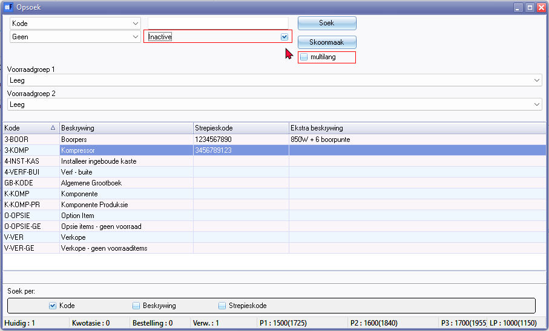
Inactive
multilang
Transitional booking
|
|
Dynareg - Transitional Posting in Documents plugin - Shop - Licence : Once-off - Enable : "Documenten - Transitorisch boeken" Documentation : Help documentation |
"Transitorisch boeken
Transitorisch boeken in documenten.
Een extra kolom met subscherm om de transitorische data in te voeren."
Translation
Transitional booking
Transitional posting in documents.
An extra column with sub-screen to enter the transitory data.
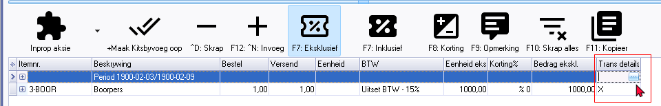
Outstanding label translations
Trans details
Transitional items
Spread type
Non
Month start
Month end
Week
Trans account (Maybe need a lookup button but double=click works)
Select account - Lookup - titlebar caption
From date 286
To date 287
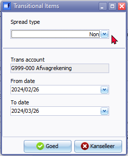
Known issue - Adjustments, Stock in and Stock out - layout files
Previous stock adjustments - Stock out document type
- Any stock adjustments, including Auto correction, Surpluses, and Shortages, processed before activating this plugin, will be listed on the document grid under the Stock out document type.
- These adjustments would have been made using the Input → Adjust stock menu or by manually changing stock quantities on the stock item grid.
- The document numbers for these stock adjustments consist of 7 digits and include 'ST' as the prefix.
- Duplicate document number - The first Stock out document created, also starts with "ST00001" which is a duplication of previous stock adjustments before activating Enable this plugin.
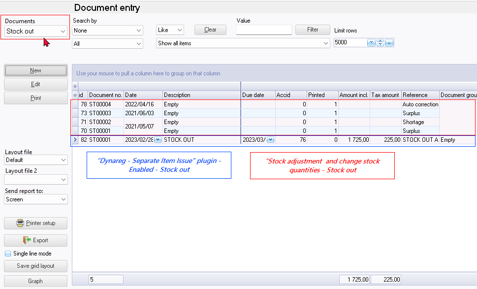
Separate item issue (Stock in / Stock out document types)
|
|
Dynareg - Separate Item Issue Plugin - Shop - Licence : Once-off - Enable : "Aparte artickel uitgifte" Documentation : Help documentation |

Apparte artikel uitgifte
Geeft 2 extra documenten waarmee artikel in en uitgifte kan worden ingeboekt. Deze verwerkt dan aantallen en eventueele kosten van verkoop. Met de andere documenten worden dan alleen posten omzet en btw geboekt en geen aantallen meer.
Translation
Separate item issue
Provides 2 additional document types (Stock in and Stock out) with which items can be entered and issued. This then processes quantities and any costs of sales. With the other documents, only turnover and Tax (VAT/GST/Sales tax) items are recorded and no more quantities.
BUG labels
- Input → Stock in menu should read Stock out as it launches the "Stock out" document type. On Documents grid document type Stock in launches creditors.
- Input → Stock out menu should read Stock in as it launches the "Stock in" document type. On Documents grid document type Stock out launches debtors.
- Update ledger / Delete documents - Titlebar captions
- Update documents - Stock in - Delete supplier returns
- Update documents - Stock out - Delete orders
- Delete documents - Stock in - Delete supplier returns
- Delete documents - Stock out - Delete orders
- Update documents - Stock in - Delete supplier returns
- Delete documents - Stock in - Delete supplier returns
Extra stock of correction document Stock in / Out
|
|
Dynareg - Extra stock of correction document - Shop - Licence : Once-off - Extra stock of correction document plugin add the "Stock in / out" as an additional document type. Enable : "Documenten - Extra stock of correction document" Documentation : Help documentation - Stock in and Stock out document type Documentation : Help documentation - Stock in document type |
Extra voorraad correctiedocument
Een extra document type om voorraad correcties of eigen verbruik te verklaren.
Translation
Extra stock of correction document
An additional document type to declare stock corrections or self-consumption.
Creates a Stock in / Stock out document type
Separate item issue (Stock in document type only)
|
|
Dynareg - Separate Item Issue Plugin - Shop - Licence : Once-off - To activate the "Dynareg Only purchase via new type" plugin and enable the "Stock in" as an additional document type, you'll need to enable the following plugins: Enable : "Aparte artickel uitgifte" Enable : "Alleen inkoop" Enable : "Verminder herbestel by doorboeken inkoop" Documentation : Help documentation BUG : Stock item - Ledger disabled - cannot create new items |
Alleen inkoop
Alleen inkoop
Geeft maar 1 extra documenten waarmee artikel innamen kan worden ingeboekt. Deze verwerkt dan aantallen en eventueele kosten van verkoop.
Translation
Purchasing only
Provides only 1 additional document type (stock in) with which item intakes can be booked. This then processes quantities and any costs of sales.
Verminder herbestel by doorboeken inkoop
Verminder herbestel by doorboeken inkoop
Bij doorboeken van een inkoop verlagen van de herbestel
(2ehands winkel)
Translation
Reduce reorders by rebooking purchases
When transferring a purchase, reduce the reorder quantity.
(2nd hand store)
BUG labels
- Input → Stock out menu should read Stock in as it launches the "Stock in" document type. On Documents grid document type Stock in launches creditors.
- Update ledger / Delete documents - Titlebar captions
- Update documents - Stock in - Delete supplier returns
- Delete documents - Stock in - Delete supplier returns
Dynareg - Ecommerce / osCommerce
Ecommerce events
|
osCommerce - Events voor ecommerce - Shop - Licence : Once-off - Enable : "Ecommerce - Events voor ecommerce" |
"Events voor ecommerce
De events tabel voor Ecommerce."
"Events plugin basis
Shop web description
met deze basis plugin kunt u de events functionaliteiten laten toevoegen. Bij de prijs zit de osCommerce plugin, multi-user en het support contract inbegrepen. Dit is de basis voor het geautomatiseerd verwerken van gegevens in osfinancials. U kunt hierdoor complexe omgevingen creëren die uw bedrijfsprocessen ondersteunen en geautomatiseerde verwerking van bijvoorbeeld Afdrukken van uw documenten - Updaten van statussen naar een webshop - Versturen van email - Updaten / omzetten van document type - Herinnering email naar klanten die nog niet hebben gereageerd op hun offerte - Door de structuur van ons product kunnen wij verschillende scenario’s implementeren en zijn wij flexibel genoeg om elk bedrijfsproces te optimaliseren."
Translation
Ecommerce events
The events table for Ecommerce.
Events plugin base
Shop web description
With this basic plugin you can add the events functionalities. The price includes the osCommerce plugin, multi-user and the support contract. This is the basis for the automated processing of data in osfinancials. This allows you to create complex environments that support your business processes and automated processing of, for example, Printing your documents - Updating statuses to a webshop - Sending email - Updating / converting document type - Reminder email to customers who have not yet responded to their quote - The structure of our product allows us to implement different scenarios and is flexible enough to optimize any business process.
Documentation : Not tested. Probably need osCommerce or E-Commerce enabled.
Email documents
|
osCommerce - Email documenten - Shop - Licence : Once-off - Enable : "Ecommerce - Email documenten" |
"Email documenten
Event automatisch emailen documenten"
Translation
Email documents
Event automatically emailing documents
Documentation : Not tested. Probably need osCommerce or E-Commerce enabled.
Update status
|
osCommerce - Update status - Shop - Licence : Once-off - Enable : "Ecommerce - Update status" |
"Update status
Update document status in osCommerce"
Translation
Update status
Update document status in osCommerce
Documentation : Not tested. Probably need osCommerce or E-Commerce enabled.
Update document
|
osCommerce - Update document - Shop - Licence : Once-off - Enable : "Ecommerce - Update document" |
"Update document
Converteerd een document (b.v. offerte ) naar een factuur als deze b.v. met ideal is betaald."
Translation
Update document
Converts a document (e.g. quote) to an invoice if this is e.g. payment was made with ideal.
Documentation : Not tested. Probably need osCommerce or E-Commerce enabled.
First email check
|
|
osCommerce - Eerste email check - Shop - Licence : Once-off - Enable : "Ecommerce - Eerste email check" |
"Eerste email check
Eerste email naar de klant over zijn offerte 7 dagen na datum"
Translation
First email check
First email to the customer about his quote 7 days after date
Documentation : Not tested. Probably need osCommerce or E-Commerce enabled.
Second email announcement
|
|
osCommerce - Tweede email aankondiging verwijderen - Shop - Licence : Once-off - Enable : "Ecommerce - Tweede email aankondiging verwijderen." |
"Tweede email aankondiging verwijderen.
De tweede email neer de gebruiker dat zijn oder wordt geannuleerd."
Translation
Second email announcement.
The second email informs the user that his quote is being cancelled.
Documentation : Not tested. Probably need osCommerce or E-Commerce enabled.
Delete quote
|
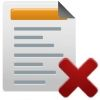 |
Delete quote plugin - Shop - Licence : Once-off - Enable : "Ecommerce - Verwijderen offerte" |
"Verwijderen offerte
Offerte verwijderen uit osFinancials"
"Deze event verwijdert automatisch een offerte als deze een status heeft en ouder is dan een bepaalde datum. Hierin kunnen afwijkende keuzes worden gemaakt en de event kan worden herhaalt waardoor er veel mogelijkheden zijn."
Translation
Delete quote
Remove quote from osFinancials
This event automatically deletes a quote if it has a status and is older than a certain date. Different choices can be made and the event can be repeated, offering many possibilities.
Documentation : Not tested. Probably need osCommerce or E-Commerce enabled.
Dynareg - Stock
Stock -> Limit on creditor with stock lookup
|
Dynareg Limit by Creditor with selection list plugin - Shop - Licence : Once-off - Enable : "Voorraad - Limiteer crediteur met keuze" Documentation : Help documentation - |
Voorraad -> Limiteer op crediteur met keuze
Limiteer op crediter met keuzen lijst,
Translation
Stock -> Limit on creditor with stock lookup
Limit on creditor with selection list,
Inactive stock in documents
"Inactive vooraad in documenten
Verbergt de inactive artikelen in de selectie lijst."
Translation
Inactive stock in documents
Hides the inactive items in the selection list.
Does not seem to work - lists only active stock items - (set inactive on Stock item form, does not include inactive items on the Stock lookup).
Dynareg - bank import
|
Dynareg bank import - Shop - Licence : Once-off - Enable : "bank import - Match ideal op omschrijving" Documentation : Help documentatio - Bank import plugin - |
"bank import
Match ideal on omschrywing
Kan de ideal betalingen die op een bank gebeuren matchen op document nummer."
Translation
Bank import
Match ideal on description
Can match the ideal payments made at a bank by document number.
Shop description
Bank and Ideal payments match
With this addition to the bank import plugin , payment on your bank account can automatically been matched. The matching is done by text description/document number. The matching is not only available for ' normal' bank payment, but also for Ideal payments. Matching Ideal payments is only possible when there are individual payment lines on your bank account instead of batch payments.
The plugin doesn't has to be downloaded. It will be activated by a code. You will receive the code(s) and instructions through mail within two workdays after payment.
NOTE : Match Ideal Bank @*@: A specific feature integrating iDEAL online payment method for payments or transactions within the Bank-import plugin. This context menu item is already available in Batch entry screens within the Bank-import plugin whether this Dynareg "bank import - Match ideal on omschrywing" is enabled or disabled.
Dynareg - Free fields
These files looks like they exists in the " BIN\SQL\FIREBIRD\ " folder
Also some files with a x prefixed in the file name:
xCUST_CUSTITEMSEARCH.txt"
xCUST_FREEDESCLOOKUPRESULT.txt"
xCUST_FREEDESCLOOKUPTYPE.txt"
xCUST_FREEFIELDFINDCRBARCODE.txt"
xCUST_FREEFIELDFINDCRBARCODE_old.txt"
xCUST_FREEFIELDFINDCRCODE.txt"
xCUST_FREEFIELDFINDCRCODE_old.txt"
xCUST_GETSUPCODE.txt"
xCUST_PURCHASEAFTERSAVE.TXT"
xCUST_PURCHASEAFTERSAVE_old.TXT"
xCUST_SELECTDISCOUNTSTOCKCRED.TXT"
xCUST_SELECTREORD.TXT"
xCUST_SELECTREORDBEST.TXT"
xCUST_SELECTREORDBEST_ORD.TXT"
xCUST_SELECTREORDSUP.TXT"
XCUST_SELECTSUPPPRICE.TXT"
xCUST_SELECTUNITONCRED.TXT"
xCUSTITEMSEARCH.txt"
xFREESTOCKLOOKUP.TXT"
xFREESTOCKLOOKUPCR.TXT"
Creditors codes
Crediteuren codes
Crediteuren code in vrije velden met prijs barcode en voorraadcode
Translation
Creditors codes
Creditor code in free fields with price barcode and stock code
Documentation : Not tested.
File for free lookup codes.
Bestand voor vrij opzoeken code's
Bestand om de vrij in te vullen codes te kunnen doorzoeken in een document.
Translation
File for free lookup codes.
File for searching free entered codes in a document.
Error
File saved!
BIN\SQL\FIREBIRD\CR_FREESTOCKLOOKUP.TXT
Documentation : Not tested.
Select for the adjusted prices.
Select voor de aangepaste prijzen.
Met deze sql worden de prijzen die zijn ingevoerd gebruikt bij een inkoop.
Translation
Select for the adjusted prices.
With this SQL, the prices entered are used for a purchase.
Error
File saved!
BIN\SQL\FIREBIRD\CR_CUST_SELECTREORDBEST.TXT
List of items to be updated for supplier 1.
Lijst met te update artikelen voor 1 leverancier.
De lijst voor het verwerken van een artikel lijzt bij herbestelen.
Translation
List of items to be updated for supplier 1.
The list for processing an item is available when reordering.
Error
File saved!
BIN\SQL\FIREBIRD\CR_CUST_SELECTREORDSUP.TXT
Documentation : Not tested.
List of items to order
Lijst met te bestellen artikelen
Lijst voor aangepast selectie artikelen.
Translation
List of items to order
List for custom selection items.
Error
File saved!
BIN\SQL\FIREBIRD\CR_CUST_SELECTREORD.TXT
Documentation : Not tested.
Edit unit and creditor price automatically
Bewerk prijs unit en crediteur automatisch
Crediteuren code in vrije velden met prijs barcode en voorraadcode
Translation
Edit unit and creditor price automatically
Creditor code in free fields with price barcode and stock code
Error
File saved!
BIN\SQL\FIREBIRD\CR_CUST_PURCHASEAFTERSAVE.TXT
Documentation : Not tested.
Item packaging per supplier
Artikel verpakking per leverancier
Crediteuren code in vrije velden met prijs barcode en voorraadcode
Translation
Item packaging per supplier
Creditor code in free fields with price barcode and stock code
Error
File saved!
BIN\SQL\FIREBIRD\CR_CUST_SELECTUNITONCRED.TXT
Documentation : Not tested.
Creditor code for purchasing
Crediteuren code bij inkoop
Crediteuren code bij inkoop document types (inkoop, bestelling, retourzending)
Translation
Creditor code for purchasing
Creditor code for purchasing document types (purchase, order, return shipment)
Error
File saved!
BIN\SQL\FIREBIRD\CR_CUST_GETSUPCODE.TXT
Documentation : Not tested.
Dynareg - Document layouts
|
G-accounts plugin - Shop - Licence : Once-off - Enable : "Document layouts - G-rekeningen" |
"G-rekeningen
G-rekeningen invoer velden voor een aangepaste layout.
Deze kunnen worden ingesteld bij instellen->Administratie-Bedrijfs gegevens."
Translation
Document layouts
G-accounts
G-accounts input fields for a customized layout.
These can be set at Setup -> Company information.
Documentation : Not tested.
Dynareg - Point-of-Sale - Free POS -Plugins
|
|
Gratis kassa plugin - Shop - Licence : Once-off - Enable : "Gratis kassa - On click debiteuren lijst" |
"Gratis kassa
On click debiteuren lijst
Met een drup op F5 gelijk de klanten lijst krijgen i.p.v. het tussen scherm. Hierdoor is het invullen van de extra data niet meer mogelijk."
Translation
Free POS
On click debtor list
With a press of F5 you immediately get the customer list instead of the intermediate screen. This means that it is no longer possible to enter the additional data.
Documentation : Not tested.